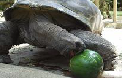
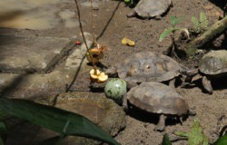
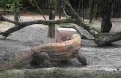
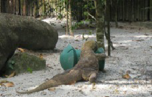

Food enrichment is conducted through chaning the below factors for the delivery of food:
- Frequency
- Schedule
- Presentation
- Processing of food items
Food items can also be presented in different ways such as strung up, hidden, scattered and in puzzle feeders.
The puzzle feeders consist of both naturalistic and artificial looking enrichment devices. It encourage exploration and investigative behaviour in the reptiles and will require the animals’ manipulation in order to get to the food

A Giant tortoise receiving a whole watermelon enrichment

Tortoises receiving strung up fruits and a boomer ball

Our male Komodo dragon, Bima, manipulating preya carton box filled with prey items

A female Komodo dragon trying her best to get the items out of a puzzle feeder by rolling it